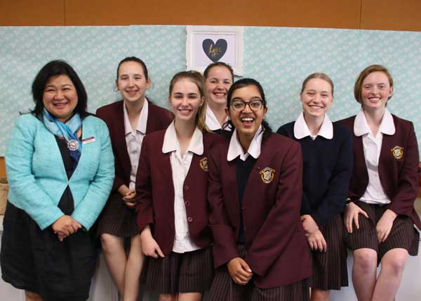

10 IST
AI, Modeling, Simulations, Data Science
Students were challenged to do an in-depth study of emerging
Artificial Intelligence (AI) applications. Taking on perspectives
other than their own, they justified preferred AI futures based
on social and ethical impacts.
Students are learning basic Data Science to help understand
how AI could work through modelling and simulation. This includes
employing analysis and visualisation skills on bigger data sets.

10 IST's work on AI is featured in Digital Technologies (DT) Hub as an exemplar for
the teaching and learning of AI in schools.
DT Hub is a website funded by the Australian government
to support the implementation of the national Digital Technologies curriculum.
We are very proud and happy to share our story.
bit.ly/10istroseville